La arcilla presenta diferentes propiedades dependiendo del estado. Si la arcilla es mezclada con agua adquiere ductilidad y maleabilidad, es decir, es capaz de deformarse
Si la arcilla es calentada por encima de 800°, aparecen unas reacciones químicas que hacen desaparecer la humedad y que la arcilla obtenga una dureza y mayor fragilidad. La arcilla presenta diferentes colores dependiendo las impurezas que contienen, los colores varían desde el rojo anaranjado hasta el blanco.
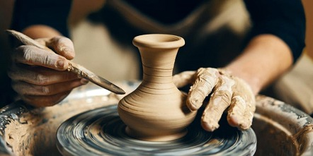 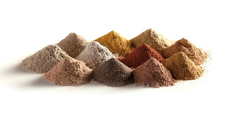2. Aplicaciones
La arcilla es un material barato y tiene un uso amplio. Se utiliza para fabricar ladrillos y cemento.
Además se utiliza para hacer utensilios de cocina o objetos de decoración.
También la arcilla se utiliza para la elaboración del papel. La arcilla también tiene usos medicinales, ya que absorbe el exceso de sebo y las impurezas en la piel grasa. Además contribuye a la regeneración de las células de la piel. Con arcilla se elaboran mascarillas, cremas y otros productos de cosmética
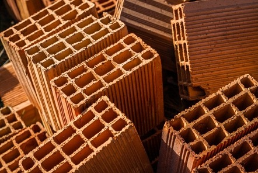La arcilla fue la primera cerámica elaborada por los humanos. Era endurecida mediante la acción del fuego en hornos para realizar edificaciones.
Otra curiosidad es que los sumerios la utilizaban como soporte para la escritura cuneiforme inscrita en tablillas de arcilla
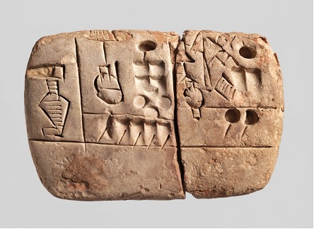Alta durabilidad debido a su gran resistencia en exteriores, ya que el gres es un material que soporta perfectamente los cambios bruscos de temperatura al ser fabricado con nitruro de sodio (compuesto desarrollado específicamente para esta característica) entre otros componentes. .
Además el gres tiene una baja absorción al agua debido a su prácticamente inexistente porosidad lo que hace que a su vez este material sea muy fácil de limpiar.
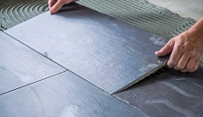El gres es un material fabricado directamente en una sola cocción lo que hace que sea igual por todos los lados. Es también un material muy fácil de trabajar pudiendo ser cortado, pintado y perforado gracias a su estructura.
Por último la elevada resistencia del gres se debe a su forma extremadamente vitrificada.
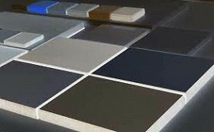El gres tiene un montón de aplicaciones dentro de las cuales las más utilizadas son:
1. Para suelos tanto de exteriores como de interiores debido a su característica de poder ser trabajado fácilmente.
2. Para tuberías de saneamiento por su gran resistencia a cambios de temperatura.
3. Y para pastos en construcciones de casas
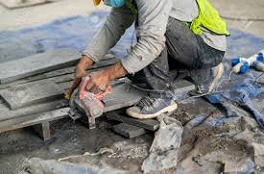El azulejo más antiguo jamás descubierto data de hace unos 4000 años y fue hallado en la ciudad de Ur, en Mesopotamia (actual Irak).
Este azulejo de arcilla esmaltada data de la época de la antigua civilización sumeria y está decorado con un motivo geométrico en forma de estrella.
Es un importante testimonio del antiguo arte de la cerámica y de la técnica de esmaltado utilizada en aquella época.
El descubrimiento de este azulejo ofrece una interesante visión de la historia del arte y de la producción de cerámica en la civilización sumeria.
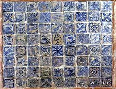En estado fresco, mezclado con agua, es maleable, mientras que en estado sólido posee gran dureza y resistencia a esfuerzos de compresión, aunque es frágil ante caídas y potentes golpes o tracciones (no es un material elástico)
Es mal aislante térmico, a pesar de soportar grandes temperaturas, y no conduce electricidad.
Es un material bastante pesado si lo comparamos con la madera o el plástico.
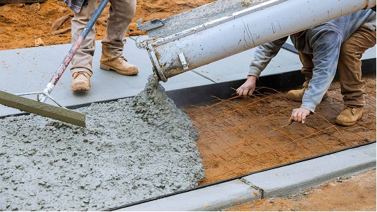Es uno de los materiales más usado en la construcción por sus propiedades, su bajo coste económico y larga durabilidad.
Está presente en la gran mayoría de la construcción civil. (Puentes, carreteras, autopistas, edificios, viviendas y cimientos).
Su uso se aplica también en la construcción de tuberías y conductos y que no deja pasar el agua y resiste distintos agentes corrosivos.
Empleado para la construcción submarina.
La Presa de las Tres Gargantas, en China, es la estructura de hormigón más grande del mundo.
Mide dos kilómetros y está compuesta de 27, 47 millones de m3 de hormigón.
Su capacidad es de 42,000 millones de toneladas de agua (4,2 x 1016 litros) lo cual ha afectado a la Tierra moviéndola 2 cm de su eje.
Se inventó en 1824, en el sur de Inglaterra, Portland; por Joseph Aspdin.
El vidrio es un material amorfo que se obtiene mediante la fusión y posterior enfriamiento de un fundido silíceo.
Transparencia: El vidrio deja pasar la luz visible, lo que lo hace ideal para ventanas, lentes y otras aplicaciones que requieren transparencia.
Dureza: El vidrio tiene una dureza comparable a la de algunos metales, lo que lo hace adecuado para su uso en aplicaciones como cuchillas y mesas de vidrio.
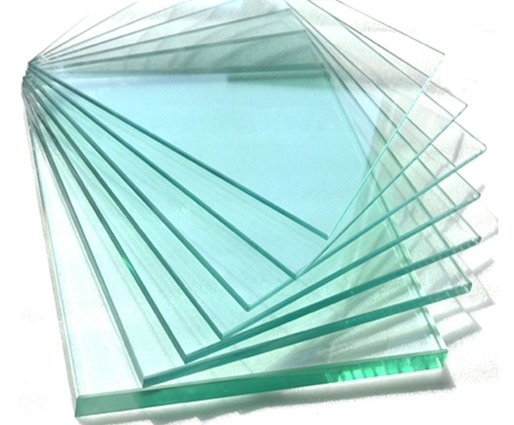El vidrio es un material versátil que se utiliza en una amplia gama de aplicaciones, desde la construcción hasta la electrónica.
Construcción: El vidrio se utiliza en ventanas, puertas, techos, fachadas y otros materiales de construcción.
Embalaje: El vidrio se utiliza en botellas, frascos, recipientes para alimentos y otros envases.
Electrónica: El vidrio se utiliza en pantallas, lentes, componentes electrónicos y otros dispositivos electrónicos.
Medicina: El vidrio se utiliza en recipientes para medicamentos, instrumentos quirúrgicos y otros equipos médicos.
1. El vidrio es un material reciclable al 100% y se puede reutilizar infinitas veces sin perder calidad
2. Aunque el vidrio es frágil, es altamente duradero y puede resistir la corrosión y la decoloración a lo largo del tiempo.
3. El vidrio de borosilicato es conocido por su alta resistencia al calor y se utiliza en la fabricación de utensilios de laboratorio y los famosos recipientes Pyrex.
4. El vidrio es un material transparente, pero también puede ser moldeado en formas coloridas mediante la adición de óxidos metálicos a la mezcla.
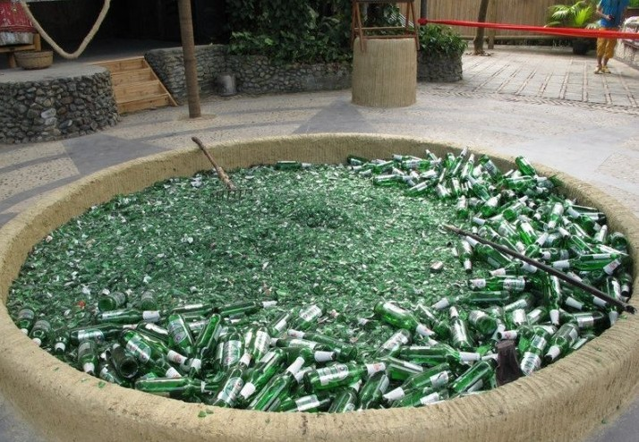PRIVET